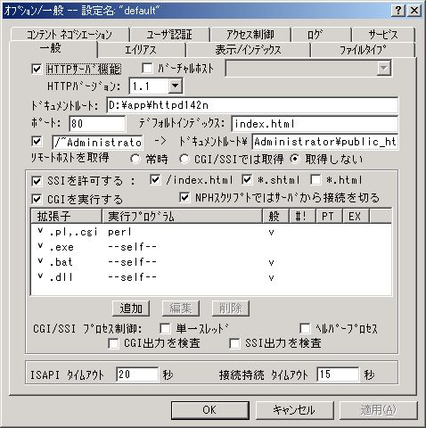

Ruby ビギナーのための CGI 入門 【第 1 回】 付録ページ
server.rb が上手く動かない時
server.rb が上手く動かない時には以下のチェック項目を確認して下さい。
- server.rb を起動した時のコマンドプロンプト (黒いウィンドウ) に起動メッセージが表示されていますか？
- Windows XP をお使いの方はインターネットへの接続をいったん切って、ファイヤーウォールを一時的に無効化して server.rb を起動して下さい。
- ファイヤーウォールを無効化する方法は Microsoft の Windows XP でインターネット ファイアウォールを有効または無効にする方法 を参照して下さい。
- Windows XP 以外を使っていて自分でファイヤーウォールをインストールされた場合、インストールしたソフトの説明に従って無効化して下さい。
- この記事を読んだ後は__必ずファイヤーウォールを有効化しましょう__。
AN HTTPD
上記のチェック項目を試しても server.rb では上手く動かないという方もいます。
AN HTTPD というサーバーでも CGI プログラムを動かすことが出来ますので、 その方法をここで紹介します。
ダウンロード
http://www.st.rim.or.jp/~nakata/ から最新の AN HTTPD をダウンロードします。 ページの中ほどに「ダウンロード」という項目があり、 ここに zip ファイルが置いてあります。 最新版の AN HTTPD へのリンクをクリックしてダウンロードし、 zip ファイルを保存します。 筆者が今号でダウンロードした時には httpd142n.zip が最新版でした。
インストール
ダウンロードが完了したら rubima0011-cgi.zip と同じ要領で AN HTTPD の zip ファイルを展開します。 下図は D:\app に zip ファイルを展開した時のスクリーンショットです。 これでインストールはおしまいです。
もし、皆さんが httpd142n かそれより古い AN HTTPD を使っている場合は
このフォルダーの中の Scripts\cmdIS.dll を必ず消去して下さい。

起動
httpd.exe がプログラム本体です。これをダブルクリックして
サーバーを起動します。
サーバーが起動したら http://localhost/readme.html にアクセスしてみましょう。
下図のように表示されたら起動成功です。

CGI 用の設定
AN HTTPD はそのままでは CGI で Ruby が使えません。 そのため CGI プログラムを試す前に CGI の設定を行う必要があります。
Windows のデスクトップの右下のタスクトレイにある AN HTTPD のアイコンを右クリックします。 すると、「オプション一般」という項目が出てくるので、これを選択します。 下のような設定ダイアログが現れます。 「一般タブ」の下の方に「追加」というボタンがあるので、それを押します。 
すると、下のようなダイアログが表示されます。

図のように設定します。これで設定は終了です。 「OK」ボタンを押しましょう。
| 拡張子 | .rb,.cgi |
| 実行プログラム | ruby |
| 一般パスでも実行する | チェック |
CGI プログラムを動かす
rubima0011-cgi の中に含まれるファイルを全て AN HTTPD をインストールしたフォルダーの cgi-bin にコピーします。 下記の URL にアクセスして CGI プログラムが使えるか確かめてみて下さい。
AN HTTPD を使う場合、本文中とは URL が違います。 server.rb の時にあった「:8080」が消えたり、 「cgi-bin」が増えたりしているので、 注意して下さい。